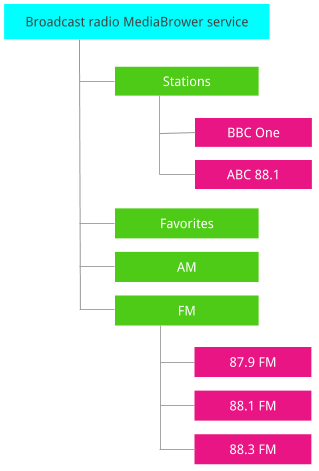
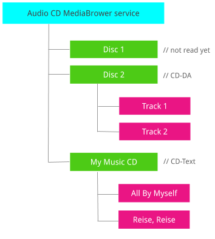
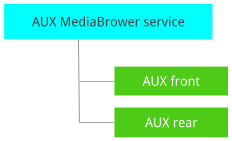

The Radio control implementation is based on MediaSession and MediaBrowse, which together enable Media and Assistant to control the Radio. For details about these interfaces, see Build Android media apps for cars.
See the Media browse tree implementation in the car-broadcastradio-support
library provided in packages/apps/Car/libs. This library also provides
extensions of ProgramSelector to convert to and from URI. To implement radio,
use this library to build a browse tree.
Media Source Switcher
To provide a seamless transition between Radio and other apps in Media, the
car-media-common library contains classes to integrate into the Radio app.
Include the MediaAppSelectorWidget widget in the XML file of the Radio app
(the icon or drop-down used in reference Media and Radio apps):
<com.android.car.media.common.MediaAppSelectorWidget
android:id="@+id/app_switch_container"
android:layout_width="@dimen/app_switch_widget_width"
android:layout_height="wrap_content"
android:background="@drawable/app_item_background"
android:gravity="center" />
This widget launches AppSelectionFragment, which displays a list of Media
sources that can be selected. If you desire a different user interface than that
provided, create a custom widget to launch the AppSelectionFragment when the
switcher is to be displayed:
AppSelectionFragment newFragment = AppSelectionFragment.create(widget,
packageName, fullScreen);
newFragment.show(mActivity.getSupportFragmentManager(), null);
A sample implementation is provided in the reference Radio app implementation,
located in packages/apps/Car/Radio.
Detailed Control Specifications
The MediaSession interface (via MediaSession.Callback) provides control
mechanisms for the currently playing Radio app:
| Mechanism | Description |
|---|---|
onPlayonStop |
Time-shifted pause, if supported. |
onPlayFromMediaIdonPlayFromUri |
Tune to a specific station. |
onSkipToNextonSkipToPrevious |
Tune to the next (or previous) station. |
onSetRating |
Add and remove to and from Favorites. |
The MediaBrowser exposes these MediaItems that can be tuned to over these three types of top-level directories:
- Programs (stations). Radio programs that are available to listen to and are in range.
- Favorites. Radio programs that have been added to Favorites list. Some may be out of range and unavailable.
- Band channels. All physically possible channels in the current region (for example, 87.9, 88.1, 88.3, 88.5, 88.7, 88.9, 89.1 and so on). Every band has a separate top-level directory.

Figure 1. Broadcast radio MediaBrowserService tree structure
Every element of these lists has a mediaId that can be used with
MediaSession to tune.
Since the MediaBrowserService implementation is non-trivial, it is highly
recommended that you use the provided car-broadcastradio-support library to
delegate implementation details from the OEM Radio app. The OEM may still elect
to implement these specifications.
MediaSession
The Play, Pause, and Stop actions do not perfectly apply to Radio due to the fact a broadcast stream cannot be paused. Instead, the Stop action can be regarded as *muting* a stream and Play as then *unmuting* the stream.
Some Radio apps simulate the pause of a broadcast stream by caching content and
then playing it back via the onPause command. Otherwise, do not advertise that
ACTION_PAUSE is supported.
Playing from mediaId and URI actions is intended to tune to a station fetched
from the MediaBrowser interface. The mediaId is an arbitrary string provided
by the Radio app to uniquely (so a given ID points to only one item) and with
stability (so a given item has the same ID through the whole session) identify a
given station. In this case, the URI will be of a well-defined schema, a form of
ProgramSelector made to perform like a URI. The uniquity attribute is preserved
though it need not be stable. (The attribute may change if the station moves to
a different frequency).
onPlayFromSearch is not used. It is the client's responsibility (Google
Assistant or companion app) to select a search result from the MediaBrowser
tree. Shifting that responsibility to the Radio app increases complexity,
requires formal contracts on the appearance of string queries, and results in an
unpredictable user experience across different hardware platforms.
Skipping to the next or previous stations depends on the current context:
- When an application is tuned to a station from the Favorites list, the Radio app can move to the next station from the list of Favorites.
- Listening to a station from a program list may result in tuning to the next available station, sorted according to station.
- Listening to a random station may result in tuning to the next physical station, perhaps without detecting a valid broadcast.
Handling errors
TransportControls actions (Play, Stop, and Next) don't provide any feedback as
to success or failure. To indicate an error requires that the MediaSession state
be to STATE_ERROR with an error message.
The Radio app must either execute these actions or set the error state. If
execution of the Play command is not immediate, change the playback state to
STATE_CONNECTING (in the case of a direct tune) or
STATE_SKIPPING_TO_PREVIOUS or STATE_SKIPPING_TO_NEXT while
the command executes.
To verify that the session changed the current program to what was requested or
was placed into the error state. the client should watch the PlaybackState.
While STATE_CONNECTING should require no more than 30 seconds, directly tuning
to a specific AM/FM frequency should occur much more quickly.
Adding and removing favorites
MediaSession has rating support, which can be used to control Favorites.
onSetRating called with a rating of the type RATING_HEART adds
or removes the currently tuned station to and from the Favorites list.
This model assumes an unordered and unbounded Favoritea list, contrary to legacy
presets,in which each saved favorite was allocated to a numerical slot
(usually 1 through 6). As a result, preset-based systems are incompatible with
onSetRating.
The MediaSession API is limited in that it can only add and remove the currently tuned station. For example, an item can't be removed from the list without it first being selected. This is a limitation of the MediaBrowser client (such as Assistant or Companion app). The Radio app is not restricted.
Important: If an app doesn't support Favorites, the following content is optional.MediaBrowser
To specify what frequencies or physical channel names (when tuning to an arbitrary channel is suitable for a given radio technology) are valid for a given region, all valid channels (frequencies) are listed for each band. The US region provides:
| Band | Channels |
|---|---|
| FM | 101 channels in the 87.8 to 108.0 MHz range, with 0.2 MHz spacing. |
| AM | 117 channels in the 530 to 1700 kHz range, with 10 kHz spacing. |
The list of currently available radio programs is flat, which doesn't enable display schemes such as grouping by Digital Audio Broadcasting (DAB) ensemble.
Entries in a Favorites list may sometimes be out of range. The Radio app may (or may not) detect that an entry can be tuned to beforehand. If so, the Radio app may not mark the entry as playable.
To identify the top level folders, use the same mechanism as is used by Bluetooth.
The Extras bundle of the MediaDescription object will contain a tuner-specific
field, which is what Bluetooth does with EXTRA_BT_FOLDER_TYPE. In the case of
broadcast radio, this requires the following new fields be defined in the public
API.
EXTRA_BCRADIO_FOLDER_TYPE = android.media.extra.EXTRA_BCRADIO_FOLDER_TYPE,
one of the following values:
| Field | Value |
|---|---|
BCRADIO_FOLDER_TYPE_PROGRAMS |
1. Currently available programs. |
BCRADIO_FOLDER_TYPE_FAVORITES |
2. Favorites. |
BCRADIO_FOLDER_TYPE_BAND |
3. All physical channels for a given band. |
Radio-specific custom metadata fields need not be set as all relevant data can
be accommodated in the existing MediaBrowser.MediaItem scheme:
- Program name (RDS PS, DAB service name).
MediaDescription.getTitle - FM frequency. URI (see ProgramSelector section) or
MediaDescription.getTitle. If theBROADCASTRADIO_FOLDER_TYPE_BANDfolder contains an entry. - Radio-specific identifiers (RDS PI, DAB SId).
MediaDescription.getMediaUriparsed to ProgramSelector.
Typically, you need not fetch the FM frequency for the entry on the current program or Favorites list (as the client should operate on media IDs). However, if such a need exists (perhaps for display purposes), the entry is present in the URI, which can be parsed to ProgramSelector.
The use of a URI for item selection within the current session is not recommended. For details, see ProgramSelector.
To avoid performance and binder-related issues, the MediaBrowser service must
support pagination. Use the EXTRA_PAGE and EXTRA_PAGE_SIZE parameters for
subscribe().
Related entries from all list types (raw channels, programs found, and
Favorites) may have different media IDs, as determined by the Radio app. The
support library will differ. The URIs (in ProgramSelector form) differs
between raw channels and programs found in most cases, except for FM without
RDS). For the most part, the same is true between programs found and Favorites
(except, when AF got updated).
Having different media IDs for entries from different types of lists makes it possible to take different actions on them: traverse either favorites list or all programs list on onSkipToNext depending on what was the folder of recently selected MediaItem (see MediaSession section). It would also mean that assistant will unintentionally switch these contexts depending on where it finds the matching entry (in the favorite list or all available programs list). It's up to the app how to handle such cases.
Special tune actions
Program list allows to tune to a specific station, but does not allow to make general requests like "tune to FM", which might result in tuning to a recently listened station on the FM band.
To support such actions, some top-level directories have the FLAG_PLAYABLE
flag set, as well as the obligatory FLAG_BROWSABLE for folders.
| Action | Tunes to | How to issue |
|---|---|---|
| Play Radio | Any | startService(ACTION_PLAY_BROADCASTRADIO) or, playFromMediaId(MediaBrowser.getRoot()) |
| Play Favorites | Any Favorite | Play from the mediaId in the favorites folder |
| Play FM | Any FM channel | Play from the mediaId of the FM band |
The decision as to which exact program to tune to is determined by the application. It's usually the recently tuned channel from the given list.
For more details on ACTION_PLAY_BROADCASTRADIO, see the General play intents
section.
Discovery and service connection
PackageManager can directly find MediaBrowserService serving the broadcast
radio tree. Just call resolveService with ACTION_PLAY_BROADCASTRADIO intent
(see General play intents section) and the MATCH_SYSTEM_ONLY flag. To find all
services that serve Radio (there may be more than one, for example separate
AM/FM and satellite), use queryIntentServices. The resolved service will
handle android.media.browse.MediaBrowserService bind intent, too, as it is
verified with GTS.
To connect to the selected MediaBrowserService, create MediaBrowser instance for
a given service component and connect. After establishing the connection, a
handle to MediaSession can be obtained via getSessionToken.
The Radio app can restrict client packages allowed to connect in onGetRoot implementation of their service. The app should allow system apps to connect without whitelisting.
If the source-specific application (for example, a Radion app) is installed on a
device without such source support, it would still advertise itself as handling
ACTION_PLAY_BROADCASTRADIO intent while the respective MediaBrowser tree would
not contain radio-specific tags (which could be true should the same system
image be flashed across different hardware devices).
A client can check that a given source is available on a device as follows:
- To discover the Radio service, call
resolveServiceforACTION_PLAY_BROADCASTRADIO). - Create and connect to a MediaBrowser for the Radio service.
- Confirm any MediaItem with
EXTRA_BCRADIO_FOLDER_TYPEextra.
Band names
Band list is represented by a set of top-level directories with a folder type
tag set to BCRADIO_FOLDER_TYPE_BAND. The titles of the respective MediaItem
are localized strings representing band names. In most cases, the strings are
the same as for the English translation. However, the client should assume so.
To provide a stable mechanism for looking up specific bands, an extra tag is
added for band folders. EXTRA_BCRADIO_BAND_NAME_EN is the non-localized name
of the band, which takes one predefined value:
TAMFMDABSXMIf the band is not on this list, it should not have a band name tag set. However, if the band is on the list, a tag must be set. HD Radio doesn't enumerate separate bands because HD Radio uses the same underlying medium as AM/FM.
General Play intents
Each app dedicated to playing a specific source (such as Radio or CD) must handle a general play intent to start playing content, possibly from aninactive state. For example, after a boot). It's up to the app how to select content to play, but it's usually the recently played Radio app or CD track.
A separate intent is defined for each audio source:
| Intent | Description |
|---|---|
android.car.intent.action.PLAY_BROADCASTRADIO |
|
android.car.intent.action.PLAY_AUDIOCD |
CD-DA or CD-Text. |
android.car.intent.action.PLAY_DATADISC |
Optical data disc such as CD and DVD, but not CD-DA. This may be Mixed Mode CD. |
android.car.intent.action.PLAY_AUX |
Without specifying an AUX port. |
android.car.intent.action.PLAY_BLUETOOTH |
|
android.car.intent.action.PLAY_USB |
Without specifying a USB device. |
android.car.intent.action.PLAY_LOCAL |
Local media storage, such as a built-in Flash drive. |
Intents were selected for use with the Play command, because intents solve performs two purposes:
Play command Service discovery
An additional benefit is that an intent can execute a simple action without opening a MediaBrowser session. That stated, service discovery is the more valuable purpose addressed by intents. The procedure for service discovery thus becomes straight-forward and unequivocal. For details, see "Discovery and service connection".
To simplify client implementations, an alternative to the issuing of the Play
command (that also has to be implemented by the Radio app) is to issue
playFromMediaId1 with therootIdof the root node (used asmediaId). While the
root node is not meant to be playable, itsrootIdis an arbitrary string that
can be designated as consumable as a mediaId.
ProgramSelector
While mediaId is sufficient to select a channel from the MediaBrowserService,
it's bound to a session and not consistent between providers. In some cases, the
client may need an absolute pointer (like an absolute frequency) to maintain it
between sessions and devices.
In this era of DABs, a bare frequency is not enough to tune to a specific
station. To provide an entity that can be used to tune to either an analog or
digital channel, ProgramSelector was designed. (design doc, HAL sources, Java
sources). This entity consists of two parts:
- Primary identifier. A unique and stable identifier for a given radio station that doesn't change, but may not be enough to tune to that station. For example, an RDS PI code, which may be translated to the call sign in the US.
- Secondary identifiers. Any additional identifiers useful for tuning to the station. For example, frequency, possibly including identifiers from other radio technologies. A DAB station may fallback on analog broadcasting.
To make ProgramSelector fit into this MediaBrowser/MediaSession-based solution, define a URI schema to serialize it. The schema is defined as follows:
broadcastradio://program/<primary ID type>/<primary ID>? <secondary ID type>=<secondary ID><secondary ID type>=<secondary ID>
Where the secondary identifiers (which appear after the ? character) are
optional and can be removed to provide a stable identifier for use as a mediaId.
For example:
broadcastradio://program/RDS_PI/1234?
AMFM_FREQUENCY=88500&AMFM_FREQUENCY=103300broadcastradio://program/AMFM_FREQUENCY/102100broadcastradio://program/DAB_SID_EXT/14895264?RDS_PI=1234
The authority part (AKA host) of the program provides some room to extend the
scheme in the future.
Identifier type strings are precisely specified since the names in the HAL 2.x
definition of IdentifierType and the value format is a decimal or
hexadecimal (with a 0x prefix) number.
All vendor-specific identifiers are represented with a VENDOR_ prefix. For
example,VENDOR_0 for VENDOR_START and VENDOR_1 for
VENDOR_START + 1.
The initial design used a single colon (:) instead of the :// sequence after
the scheme part. However, the android.net.Uri does not support absolute
hierarchical URI references.
Other source types
Other audio sources can be managed similarly to radio. For example, auxiliary input and Audio CD player.
A single application may serve several types of sources. In such cases, it's highly recommended that a separate MediaBrowserService be created for each kind of source. Even in a set-up with multiple served sources or MediaBrowserServices, it's highly recommended you have a single MediaSession within a single application.
Audio CD
The application that serves such disks exposes the MediaBrowser with a single browsable entry (or more, if the system has a CD changer), which in turn contains all tracks of a given CD. If the system does not have the knowledge about the tracks on every CD (for example, when all disks are inserted in a cartridge at one time and they have not all been read), then MediaItem for the entire disk is just PLAYABLE, and not BROWSABLE and PLAYABLE. If no disk occupies a given slot, the item is neither PLAYABLE nor BROWSABLE, although each slot must always be present in the tree).

Figure 2. Audio CD MediaBrowser tree structure
These entries would be marked in a similar way that broadcast radio folders are – they would contain additional extra fields defined in MediaDescription API:
| Field | Value |
|---|---|
EXTRA_CD_TRACK |
For every MediaItem on Audio CD, 1-based track number. |
EXTRA_CD_DISK |
1-based disk number. |
For a CD-Text enabled system and compatible disk, the top-level MediaItem has the title of the disk. Similarly, MediaItems for tracks have the title of the track.
Auxiliary input
The application that serves auxiliary input exposes a MediaBrowser tree with a
single entry (or more, if there are multiple ports) to represent the AUX In
port. The respective MediaSession takes its mediaId and switches to that
source after receicing a playFromMediaId request.

Figure 3. AUX MediaBrowser tree structure
Each AUX MediaItem entry has an extra field EXTRA_AUX_PORT_NAME set to the
non-localized name of the port without the "AUX" phrase. For example "AUX 1"
would be set to "1", "AUX front" to "front", and "AUX" to an empty string. In
non-English locales, the name tag remains the same as the English string. This
is unlikely for EXTRA_BCRADIO_BAND_NAME_EN, for which values are OEM-defined
and not constrained to a predefined list.
If the hardware can check if a device is connected to the AUX port, the hardware
should mark the MediaItem as PLAYABLE only when an input is connected. The
hardware must still enumerate (though not PLAYABLE) if nothing sis connected
to this port. If the hardware has no such capability, the MediaItem must always
be PLAYABLE.
Extra fields
The following extra keys can be defined:
| Field | Value |
|---|---|
EXTRA_CD_TRACK |
android.media.extra.CD_TRACK |
EXTRA_CD_DISK |
android.media.extra.CD_DISK |
EXTRA_AUX_PORT_NAME |
android.media.extra.AUX_PORT_NAME |
The client must look up the top-level MediaItems for those elements with values
set for EXTRA_CD_DISK and EXTRA_AUX_PORT_NAME.
Detailed Examples
The following examples address the MediaBrowser tree structure for those source types included in this design.
Broadcast radio MediaBrowserService handles ACTION_PLAY_BROADCASTRADIO.
| Stations (browsable) | URI | |
|---|---|---|
EXTRA_BCRADIO_FOLDER_TYPE=BCRADIO_FOLDER_TYPE_PROGRAMS |
||
| BBC One (playable) | broadcastradio://program/RDS_PI/1234?AMFM_FREQUENCY=90500 |
|
| ABC 88.1 (playable) | broadcastradio://program/RDS_PI/5678?AMFM_FREQUENCY=88100 |
|
| ABC 88.1 HD1 (playable) | broadcastradio://program/HD_STATION_ID_EXT/158241DEADBEEF?AMFM_FREQUENCY=88100&RDS_PI=5678 |
|
| ABC 88.1 HD2 (playable) | broadcastradio://program/HD_STATION_ID_EXT/158242DEADBEFE |
|
| 90.5 FM (playable) FM without RDS |
broadcastradio://program/AMFM_FREQUENCY/90500 |
|
| 620 AM (playable) | broadcastradio://program/AMFM_FREQUENCY/620 |
|
| BBC One (playable) | broadcastradio://program/DAB_SID_EXT/1E24102?RDS_PI=1234 |
|
| Favorites (browsable, playable) | URI | |
|---|---|---|
EXTRA_BCRADIO_FOLDER_TYPE=BCRADIO_FOLDER_TYPE_FAVORITES |
||
| BBC One (playable) | broadcastradio://program/RDS_PI/1234?AMFM_FREQUENCY=101300 |
|
| BBC Two (not playable) | broadcastradio://program/RDS_PI/1300?AMFM_FREQUENCY=102100 |
|
| AM (browsable, playable) | EXTRA_BCRADIO_FOLDER_TYPE=BCRADIO_FOLDER_TYPE_BAND |
|
| AM (browsable, playable) | URI | |
|---|---|---|
EXTRA_BCRADIO_FOLDER_TYPE=BCRADIO_FOLDER_TYPE_BANDEXTRA_BCRADIO_BAND_NAME_EN="AM" |
||
| 530 AM (playable) | broadcastradio://program/AMFM_FREQUENCY/530 |
|
| 540 AM (playable) | broadcastradio://program/AMFM_FREQUENCY/540 |
|
| 550 AM (playable) | broadcastradio://program/AMFM_FREQUENCY/550 |
|
| FM (browsable, playable) | URI | |
|---|---|---|
EXTRA_BCRADIO_FOLDER_TYPE=BCRADIO_FOLDER_TYPE_BAND EXTRA_BCRADIO_BAND_NAME_EN="FM" |
||
| 87.7 FM (playable) | broadcastradio://program/AMFM_FREQUENCY/87700 |
|
| 87.9 FM (playable) | broadcastradio://program/AMFM_FREQUENCY/87900 |
|
| 88.1 FM (playable) | broadcastradio://program/AMFM_FREQUENCY/88100 |
|
| DAB (playable) | EXTRA_BCRADIO_FOLDER_TYPE=BCRADIO_FOLDER_TYPE_BANDEXTRA_BCRADIO_BAND_NAME_EN="DAB" |
|
| Audio CD MediaBrowserService | URI |
|---|---|
Handles ACTION_PLAY_AUDIOCD |
|
| Disc 1 (playable) | EXTRA_CD_DISK=1 |
| Disc 2 (browsable, playable) | EXTRA_CD_DISK=2EXTRA_CD_TRACK=1EXTRA_CD_TRACK=2 |
| My music CD (browsable, playable) | EXTRA_CD_DISK=3EXTRA_CD_TRACK=1EXTRA_CD_TRACK=2 |
| Empty slot 4 (not playable) | EXTRA_CD_DISK=4 |
| AUX MediaBrowserService | URI |
|---|---|
Handles ACTION_PLAY_AUX |
|
| AUX front (playable) | EXTRA_AUX_PORT_NAME="front" |
| AUX rear (playable) | EXTRA_AUX_PORT_NAME="rear" |